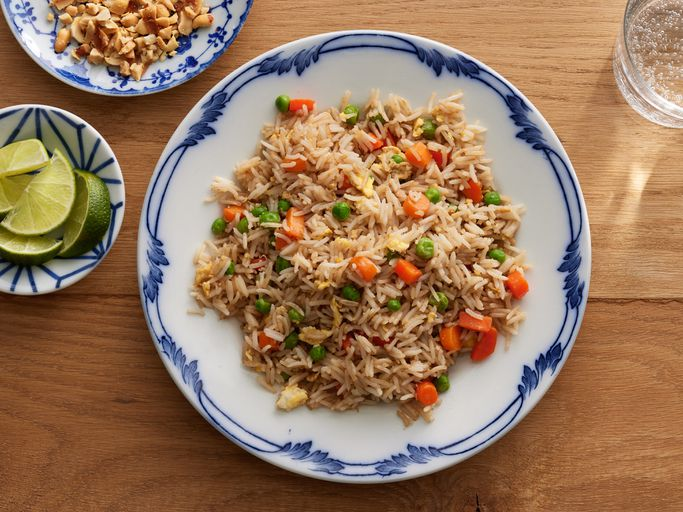

The Recipe for Fried Rice

Description
Nasi Goreng, a beloved Indonesian dish, is a fragrant and flavorful fried rice that encapsulates the essence of Southeast Asian cuisine. Cooked to perfection, it involves stir-frying pre-cooked rice with a medley of ingredients such as shallots, garlic, tamarind, and a combination of sweet soy sauce and kecap manis.
The dish often incorporates protein elements like shrimp, chicken, or beef, and is garnished with a fried egg, cucumber slices, and crispy shallots. The amalgamation of aromatic spices, savory sauces, and the delightful crunch of the garnishes creates a symphony of tastes that make Nasi Goreng a true culinary delight and a staple street food favorite in Indonesia.
Ingredients
- 3 cups cooked and cooled rice (preferably a day old)
- 2 tablespoons vegetable oil
- 1 onion, finely chopped
- 2 cloves garlic, minced
- 1 cup mixed vegetables (carrots, peas, corn, and diced bell peppers work well)
- 2 eggs, beaten
- 3 tablespoons soy sauce
- 1 tablespoon oyster sauce (optional)
- 1 teaspoon sesame oil
- Salt and pepper to taste
- Green onions, chopped, for garnish (optional)
Cooking Steps
-
Prepare the ingredients
- Ensure that the cooked rice is cooled and not clumped together. This is easier to achieve with day-old rice.
- Chop the onion, garlic, and any other vegetables you're using.
-
Stir fry vegetables
- Heat the vegetable oil in a wok or large pan over medium-high heat.
- Add chopped onions and garlic. Sauté until they are fragrant and the onions are translucent.
- Add the mixed vegetables and stir-fry until they are tender-crisp.
-
Push vegetables to the side
- Push the vegetables to the side of the wok or pan to make space for the eggs.
-
Scramble the eggs
- Pour the beaten eggs into the cleared space. Allow them to set for a moment and then scramble them until they're cooked through.
-
Combine with rice
- Add the cooked rice to the wok or pan. Use a spatula to break up any clumps.
-
Add sauces
- Pour soy sauce, oyster sauce (if using), and sesame oil over the rice. Toss everything together until well combined.
-
Season and garnish
- Season with salt and pepper to taste. Add chopped green onions for freshness and extra flavor.
-
Stir-fry
- Continue stir-frying the rice mixture over medium-high heat until it's heated through and has a slightly crispy texture.
-
Serve
- Once everything is well mixed and heated, remove the fried rice from the heat.
-
Garnish & enjoy
- Garnish with additional green onions if desired. Serve the fried rice hot, either as a side dish or a main course.
Fried rice is versatile, so feel free to customize it by adding your favorite protein (chicken, shrimp, tofu) or other ingredients like diced pineapple or cashews.
Enjoy your homemade Fried Rice!